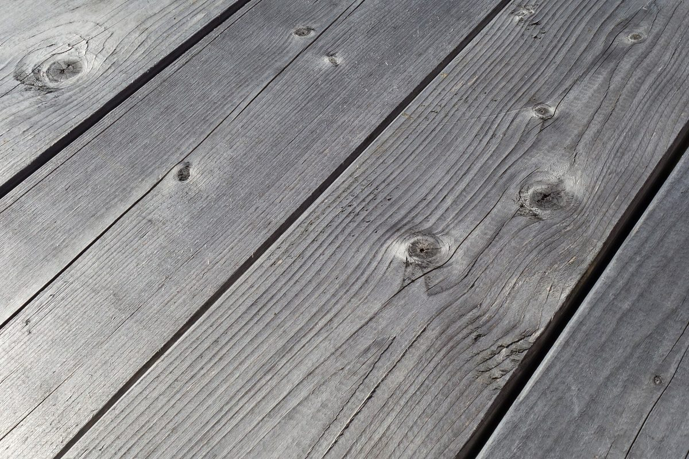
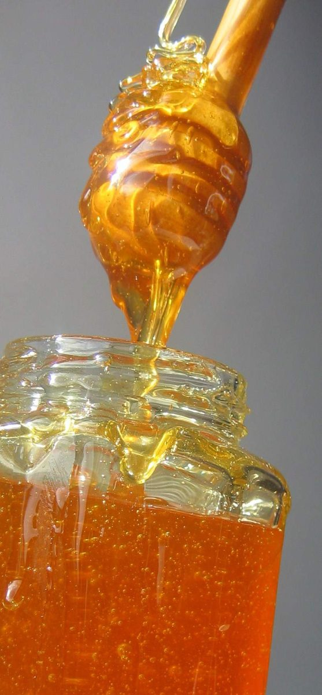
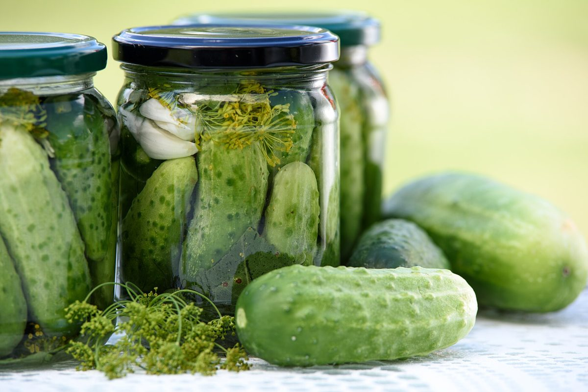
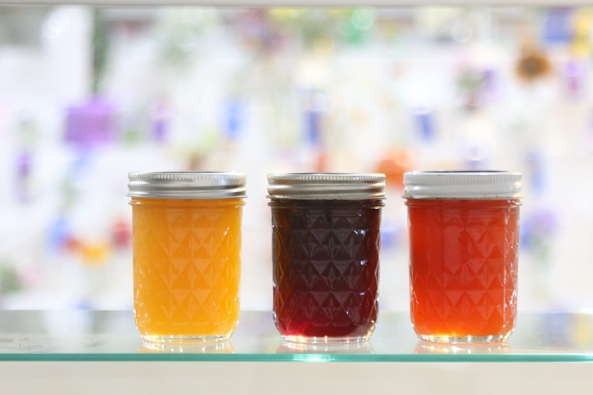

荷札 No.2
荷札に書けること
お店について確認できているのは、所在地・電話番号・Instagramのアカウントです。
このページの「想像してみる」部分は、制作側が想像して書いたものです。お店の実際の様子・考え・メニューとは関係がありません。
確認できていること
- 店名は「アン シャーリー ハウス」、業種はカフェ
- 所在地は長崎県雲仙市小浜町北本町２１９(〒854-0514)
- 電話番号は0957-74-4123
- Instagramは @anneshirley_house
- 営業時間・定休日・メニュー・価格・ご予約・駐車場は準備中

想像してみる
空の荷札に、何を書こう
制作側は、果物の木箱にはいつも荷札が付くことから、このお店の荷札には何が書かれるのだろうと想像しました。いまはまだ空欄のままです。実際のお店の姿ではありません。下の写真は、荷札の脇に添えるイメージ写真です。


